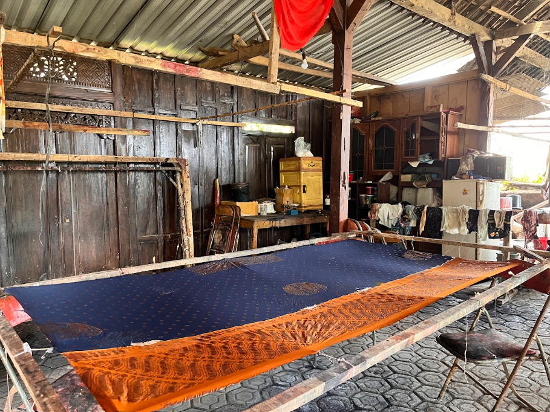
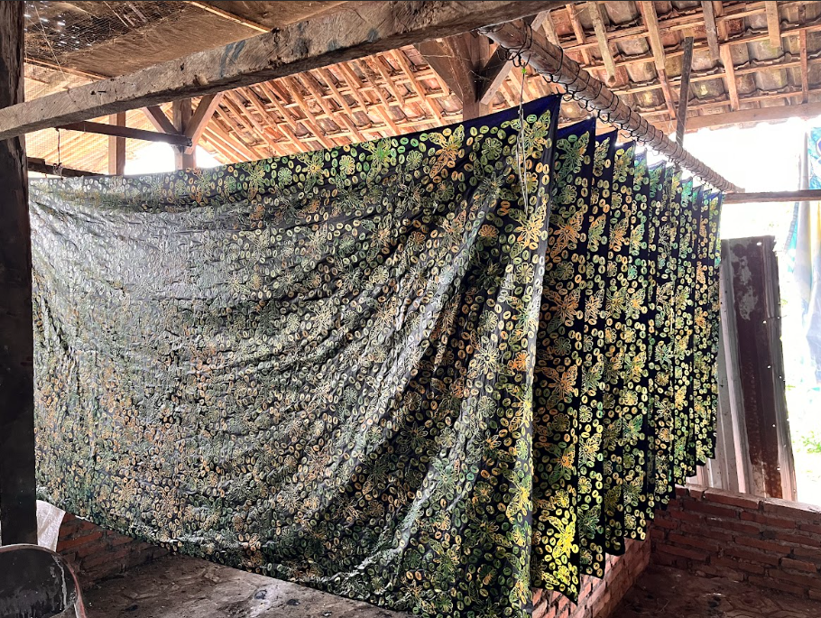

Usaha Mikro, Kecil, dan Menengah
BATIK TULIS DESA PAIT



Batik Tulis Desa Pait merupakan hasil karya masyarakat lokal yang menggambarkan kekayaan budaya dan kreativitas warga Desa Pait, Kecamatan Kasembon, Kabupaten Malang. Setiap motif yang dibuat memiliki makna filosofis yang menggambarkan kehidupan masyarakat pedesaan, keindahan alam, serta nilai-nilai kearifan lokal yang dijaga secara turun-temurun.
Proses pembuatan batik dilakukan secara manual menggunakan canting dan malam, menjadikannya batik tulis murni dengan keunikan pada setiap goresannya. Pewarnaan menggunakan bahan alami yang ramah lingkungan, menjaga kualitas serta kelestarian tradisi membatik.
Produk Batik Tulis Desa Pait telah banyak dikenal di wilayah sekitar Malang dan sering menjadi pilihan oleh-oleh khas bagi wisatawan yang berkunjung. Dengan desain motif khas Kasembon dan kualitas bahan yang baik, batik ini menjadi kebanggaan masyarakat Desa Pait dalam mengembangkan ekonomi kreatif berbasis budaya.